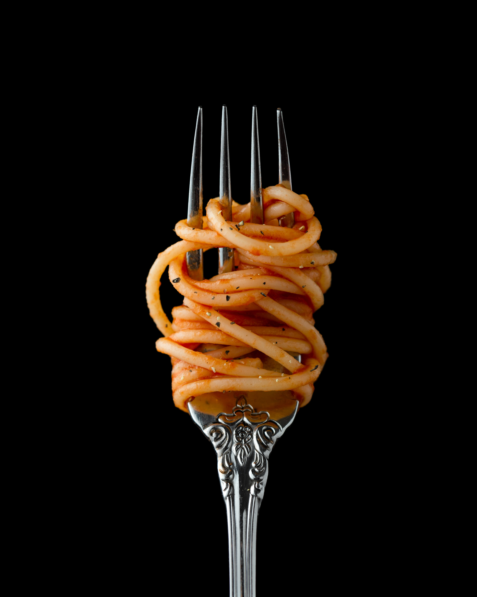

Martha's One Pan Pasta

Description
Follow these instructions for quick and easy one pan pasta dish!
Ingredients
- 8 oz spaghetti
- 1 cup cherry tomatoes, sliced in half
- 1/2 cup baby spinach leaves
- small onion, finely sliced
- 3 cloves garlic, finely sliced
- 1 red chilli, finely chopped
- A small handful of basil leaves, roughly chopped
- 2 tbsp extra virgin olive oil
- 1/2 cup pecorino cheese, grated
- Sea salt and ground black pepper
Steps
- Arrange the tomatoes, spinach, onion, garlic, and chilli across the base of a large frying pan. Nestle the spaghetti in the centre of the pan and pour over the olive oil and 600ml of water or chicken stock.
- Place the pan over a medium high heat and bring the contents of the pan to the boil. Using a tongs, stir the pasta regularly and cook for about 9 minutes until it’s cooked and the liquid has nearly evaporated creating a sauce.
- Remove the pan from heat and stir though the pecorino cheese and basil. Season with sea salt and ground black pepper to serve.
You can find this recipe at donalskehan.com